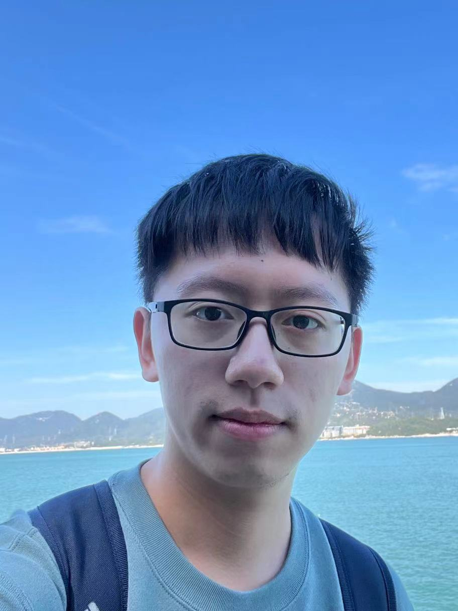
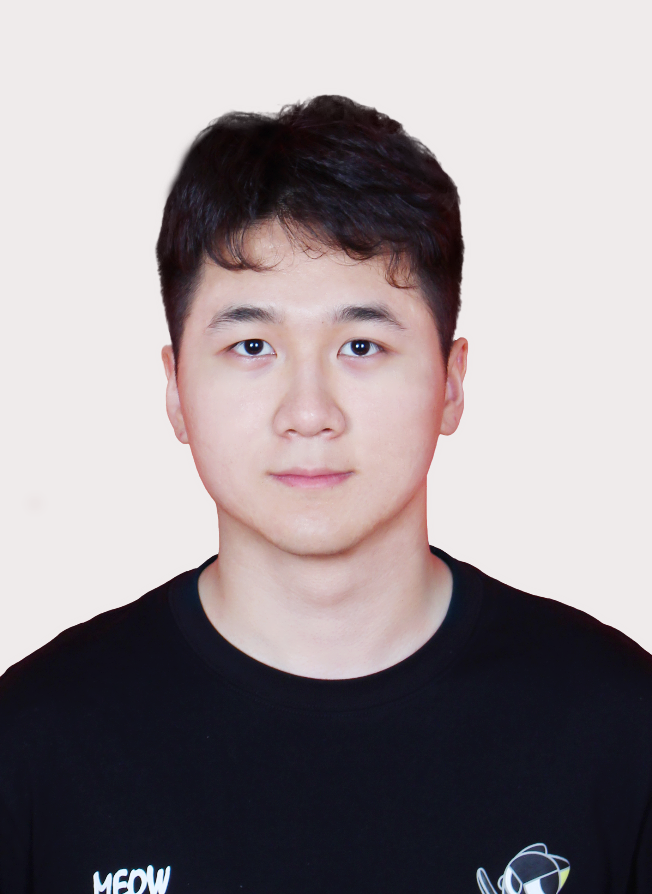

SIAT-INVS LAB
Introduction
We are Intelligent Networked Vehicle System (INVS) Lab at Shenzhen Institute of Advanced Technology (SIAT), Chinese Academy of Sciences.
Our long-term goal is to realize trust-worthy interactive autonomous systems.
Currently, we work on connected autonomous vehicles and edge robotics.
We leverage advanced optimization, maching learning, and high-fidelity simulation to enhance their efficiency and robustness.
SIAT-INVS LAB has been working closely with universities including HKU, UM, SUSTech, BUPT, SCUT, SYSU, CUHK-SZ, HKUST-GZ, and companies including Direct Drive Tech, Agilex Rbotics, Huawei, China Unicom, DeepRoute, RoboSense.
SIAT-INVS develops various swarm robots platform, including wheel-leg robots, car-like robots, aerial robots, turtlebots, race cars, Hololens, GPU servers, RF analyzers.
Pictures
Videos
Some interesting vedios can be found at:
PI
 |
Shuai Wang
Associate Professor
Shenzhen Institute of Advanced Technology, Chinese Academy of Sciences (CAS)
Research Area: Autonomous driving, communications, robotis
E-mail: s.wang@siat.ac.cn
|
Group Members
 |
Guoliang Li
PhD Candidate
Shenzhen Institute of Advanced Technology, Chinese Academy of Sciences (CAS)
Joint PhD, University of Macao
Research Area: Sensor simulation, autonomous driving
E-mail: ligl2020@mail.sustech.edu.cn
|
|
 |
Lexiong Huang
Master Student
Shenzhen Institute of Advanced Technology, Chinese Academy of Sciences (CAS)
Research Area: Autonomous driving
E-mail: lx.huang@siat.ac.cn
|
|
 |
Zhiyou Ji
Master Student
Shenzhen Institute of Advanced Technology, Chinese Academy of Sciences (CAS)
B.S., Zhengzhou University（ZZU）
Research Area: Task-oriented navigation
E-mail: zy.ji@siat.ac.cn
|
 |
Chengyang Li
Master Student
Shenzhen Institute of Advanced Technology, Chinese Academy of Sciences (CAS)
Joint MPhil, Hong Kong University of Science and Technology
Research Area: SLAM, CARLA simulation
E-mail: licy@mail.sustech.edu.cn
|
 |
Dr. Tong Zhang
Visiting Scholar
Shenzhen Institute of Advanced Technology, Chinese Academy of Sciences (CAS)
Lecturer, Jinan University
Ph.D., Chinese University of Hong Kong
Research Area: Integrated sensing and communications, communication security
E-mail: zhangt7@sustech.edu.cn
|
 |
Jianjun Chen
Visiting PhD Student
Shenzhen Institute of Advanced Technology, Chinese Academy of Sciences (CAS)
Ph.D. Student, Southern University of Science and Technology
Research Area: V2X simulation, distributed learning
E-mail: 11960008@mail.sustech.edu.cn
|
 |
Ruihua Han
Visiting PhD Student
Shenzhen Institute of Advanced Technology, Chinese Academy of Sciences (CAS)
Ph.D. Student, Southern University of Science and Technology
University of Hong Kong
Research Area: Robotics, motion planning
E-mail: hanruihuaff@gmail.com
|
 |
Yuncong Hong
Visiting PhD Student
Shenzhen Institute of Advanced Technology, Chinese Academy of Sciences (CAS)
PhD Student, University of Hong Kong
Research Area: Federated learning, system design
E-mail: hongyc@mail.sustech.edu.cn
|
|
|
Weibin Kou
Visiting PhD Student
Shenzhen Institute of Advanced Technology, Chinese Academy of Sciences (CAS)
PhD Student, University of Hong Kong
Research Area: Robot learning, networked system
E-mail: wbkou@connect.hku.hk
|
Alumni:
Shanfeng Huang, Ph.D. 2021 (Southern University of Science and Technology); currently a Research Engineer in Huawei Technologies.
Zijian Zhang, Master 2021 (Southern University of Science and Technology); currently a Research Engineer in Huawei Technologies.
Dan Liu, Ph.D 2021, (Beijing University of Posts and Telecommunications); currently a Research Engineer in Samsung Electronics China Research Institute
Liangkai Zhou, RA 2020 (Southern University of Science and Technology); currently a Ph.D. student at Stony Brook University (SBU).
Xiaoqing Liu, Ph.D 2019 (Beijing University of Posts and Telecommunications); Currently a Research Engineer at Huawei Technologies.